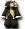

夏豔之猴
我們伺服器實際的怪物設定（不是日版 wiki 的資料）。
能力值
| 等級 | 59 |
| HP | 4400～4700 |
| AC | 35 |
| MC | 80 |
| 經驗值 | 37200 |
| 金錢 | 2200～2200 |
出現地圖
| 地圖 | 數量 | 出現位置 |
| 海賊群島3 | 15 | 整張地圖 |
| 海賊群島5 | 15 | 整張地圖 |
| 海賊群島6 | 15 | 整張地圖 |
| 海賊群島7 | 15 | 整張地圖 |
掉落道具
| 道具 | 基本機率 |
 挑撥 挑撥 | 0.5% |
| m | 0.5% |
| 金蟬脫殼 | 1.3% |
| 蝙蝠乾 | 1% |
| 黑暗治療藥水製造法 | 1% |
| 樞機蘭斯 | 0.05% |
 法師披風 | 0.05% |
| 命運太妹之帽 | 0.05% |
| 覺醒手套 | 0.05% |
| 覺醒之戒 | 0.05% |
| [商店用]強力痊癒術 | 0.1% |
 格鬥服 格鬥服 | 0.05% |
 劍俠胸甲 劍俠胸甲 | 0.05% |
基本機率再乘上伺服器的掉寶倍率；「隨機一件」是從一組道具裡抽一件。